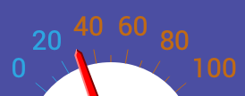

The amount received as a stake reward is dependent upon the status of liquidity for the input that is staked.
-
If the staking input is Liquid or “Spendable”, then it will receive a 5 coin reward.
-
If the staking input is Reserve, then it will receive a 10 coin reward.
-
If the staking input is Voluntarily Frozen Reserve, then it will receive a 20 coin reward.
-
If the staking input is Voluntarily Frozen Liquid, then it will receive a 40 coin reward.
Keep in mind, the Dynamic Peg index is frequently changing the total coin supply’s ratio of Liquid to Reserve

If the Peg index (shown above) is between 50 and 100, you will have a higher ratio of Liquid (Spendable) coins, and therefore have a higher chance of earning 5 BAY rewards.
If the Peg index meter (shown above) is between 0 and 50, you will have a higher ratio of Reserve coins, and therefore have a higher chance of earning 10 BAY rewards.
***Note:
The stake rewards that are earned from voluntarily frozen inputs will be received as frozen, pro-rated to match the timelock of it’s staked input.
For example:
- Bob voluntarily freezes 100,000 Liquid BAY (spendable) as one single input.
- The date of voluntary freezing is on January 1, and the input will remain frozen until May 1. (4 months)
- On March 1, Bob’s 100,000 frozen BAY input earns a 40 BAY stake reward.
- This 40 BAY stake reward will also remain frozen (along with Bob’s 100,000 frozen BAY input) until May 1.
If Bob checks the “Reward to Address” option in the Staking tab of the QT Wallet, and sends his reward to a separate address, the 40 BAY will not be frozen. Instead, it will be a mix of liquid (spendable) and reserve, depending on what the current peg index is at the time of receiving it.
{kind=link}
Questions, comments, concerns? Please post them in the comments below!